FBX Bundle
FBX Bundle addon batch exports your object selection into file bundles by a common identifier. To export for game engines such as Unity or Unreal. It is easy to use and requires just a single click to export or update game assets to your game engine.
Optional modifiers allow to automate game engine optimisations such as LOD generation, mesh optimisations or creation of collider meshes.
Download
The GIT sourcecode is hosted at bitbucket.org/renderhjs/blender-addon-fbx-bundle
Installation
- Open User Preferences in Blender and select the Add-ons tab
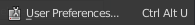 - Press Install Addon and Select the zip file
- Enable the FBX Bundle Addon
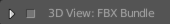
The FBX Bundle addon can be found the viewport tool panel
Quick Guide
Below are common usage examples for Unity and Unreal
Unity
- Select a path for your export location
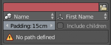 - Set the bundle mode to 'Group' which will bundle selected objects by their parent object
- Parent child objects to the main object
- Select your objects
- Press Export
Unreal
...
- Setup the export path and point it to your asset folder in Unity.
- Under the addon preferences for FBX bundle press 'Copy Unity Editor script’ and select your Unity Assets folder.
- Create a material in Blender and assign it to your object(s).
- Create a material in Unity with the same name as the material in blender.
- In Blender enable the Merge Meshes modifier and the LOD modifier
- Select your object(s) and press 'Export
Settings
All settings are stored per blender scene and allow therefore per scene unique configurations.
Platform
Choose different platforms to export for.
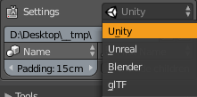
Unity
Applies the correct metric scale and fixes the y /z roation issues. An optional Unity editor script allows to automatically assign materials and collider meshes.
Unreal
Applies the correct metric scale.
Blender
Uses collada files (DAE) to export.
glTF
Uses the new glTF file format to export. This requires the glTF addon to be installed. glTF is a promosing format to compete with FBX
Path
Defines the export or import target path.
When a path is not defined a red warning color will show and you can not export or import bundles.
Bundle Mode
Defines the rule as to how to group your object selection into different file bundles. The following modes are available:
Name
Bundles objects by a common object name element. Names are compared by common element between spaces, ‘.’ or ‘_’ characters.
Parent
Bundles objects together that share the same parent object. The name of the parent object is used for each file name.
Group
Objects with the same group name are bundled together. The name of the group is used for each file name.
Material
Objects with the same material are bundled together. The name of the material is used for each file name.
Scene
Objects from the same scene are bundled together. The name of the scene is used for each file name.
Export Pivot Mode
Defines the source of the scene pivot upon exporting. The following modes are available:
First name
Uses the pivot of the object that appears alphabetically first in the bundle.
Lowest object
Uses the pivot of the lowest object in the bundle.
Bottom center
Uses bottom center of the bundle bounds.
Scene 0,0,0
Uses the center center location (0,0,0) as the pivot.
Parent
Uses the pivot of the most parent object of the bundle.
Tip: Use the Draw Fences tool to preview the pivot placement of each bundle.
Padding
This padding value is used for various tools but most notable for the ‘Draw Fences’ feature where it defines a padding used to draw around the bundles.
Include children
When enabled will automatically include children of parented objects, all objects of a group or objects of a scene if either bundle mode is active. This means that it often is enough to select just a single object of a bundle instead of all to bundle them for export.
Tools
Draw Fences
Draw grease pencil fences around the current selected bundles in your scene. A pole with a flag indicates the pivot for each bundle under the current pivot mode.
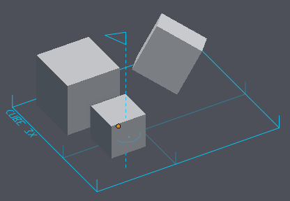
Ground Pivot
…
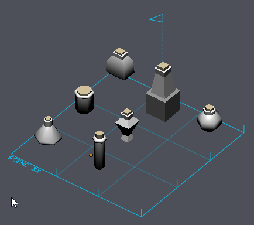
Modifiers
Modifiers are applied in the export process on a copy of your actual objects. They are used to automate common repetitive tasks that are often associated with preparing assets.
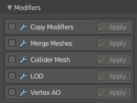
Modifiers are executed from top to bottom order.
Apply
Press the Apply button to apply individual modifiers to your selection during editing in Blender. This is a great way to preview the settings of individual modifiers.
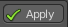
Merge Meshes
Merges all meshes of a bundle into a single mesh and object. This modifier is ideal for static environment assets.
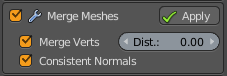
Merge Verts
Merges vertices within a specified radius. This is identical to removing double vertices in mesh editing.
Consistent Normals
Applies a ‘Consistent Normals’ operator on all meshes so mesh elements have a consistent and common normal direction.
Merge by Material
Merges meshes in groups by material.
Copy Modifiers
Copies blender modifiers from a source object to all exported objects. For example your source object could contain a triangulate or edge split modifier which would be applied on each object upon export.
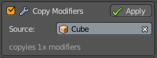
Source Object
The source object in your blend file from which to copy the modifiers.
Collider Mesh
Creates an additional collider mesh for each object in a bundle with a simplified geometry.
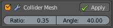
Ratio
The quality ratio of the collider mesh, a value of 0.25 means that the collider mesh will aim for a 25% vertex count to the original object.
Angle
The flattening angle of face normals to further compress the collider geometry. The bigger the angle the more blocky the collider.
LOD
Also known as level of detail which is a technique used in game engines to optimize performance. This modifier creates a series of copies of each object in your bundle with a reduced triangle count for each LOD step and a name indicating the LOD level.
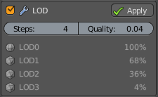
LOD levels are preview in the modifier panel with the compression ratio and LOD level.
Steps
How many LOD steps would you like to have.
Quality
The furthest away LOD compression ratio. A value of 0.05 means that LOD steps will range from 100% down to 5% geometry level.
Vertex AO
This modifier applies vertex color based ambient occlusion to each mesh of a bundle. This is a great way of adding AO depth without the limitation of texture resolution, file or memory size of textures.
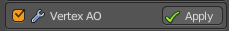
Bundles
This panel lists in realtime the current evaluated bundles of your scene selection. As you change your selection in Blender this list will adjust and show you the file names that will be exported.
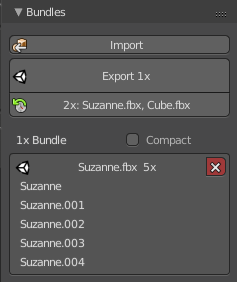
Compact View
Enables or disables compact bundle list view.
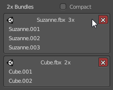
Import
Batch imports all 3D files from the specified path into the scene.
Export
Batch exports your selected objects into file bundles. Upon each bundle export your objects are copied so your original objects are notaltered. Active modifiers are applied and finally the original object selection restored.
Re-Export
Once you exported a model before FBX Bundle will remember the previous bundles you exported. Pressing the re-export button will export the very same objects from last time so you don’t have to manually select your objects to export.